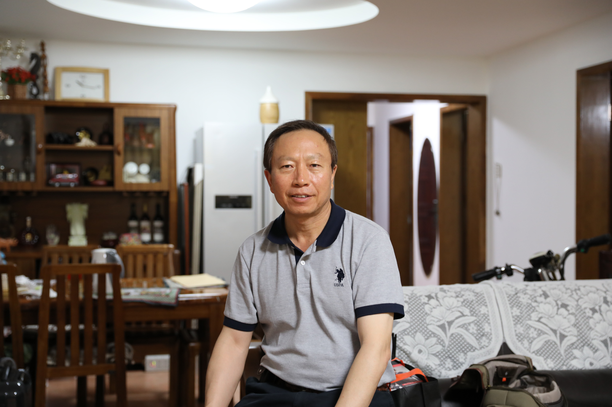
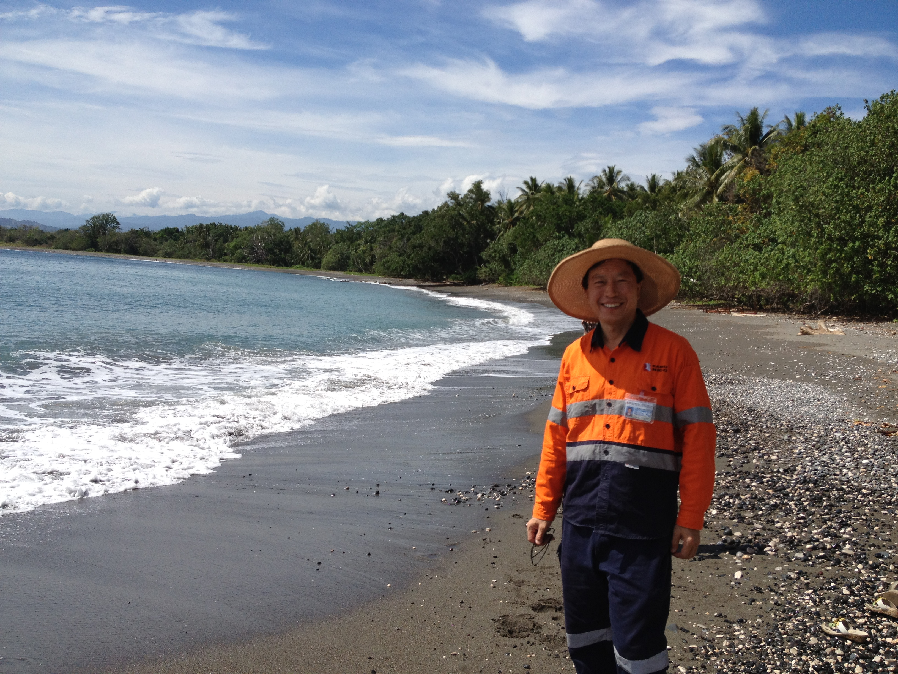
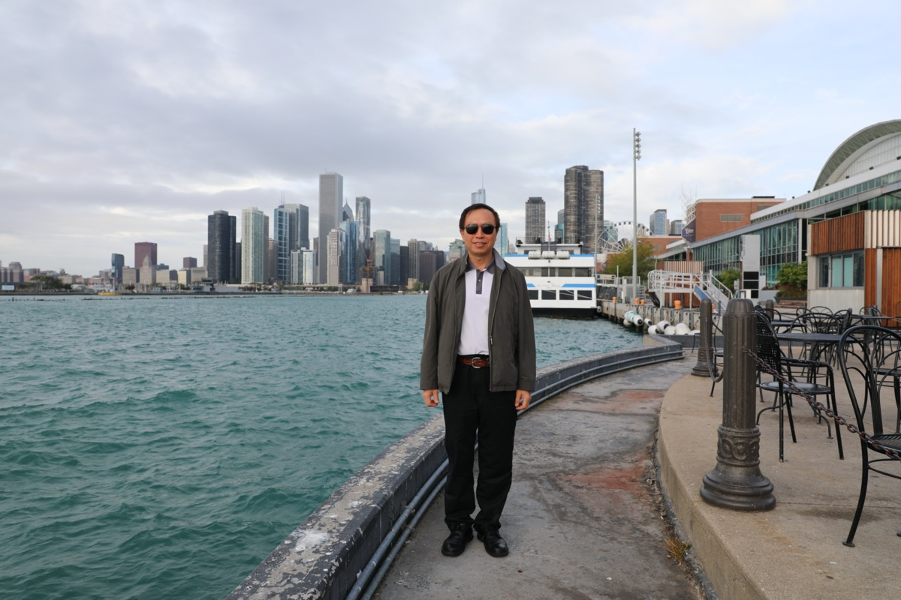
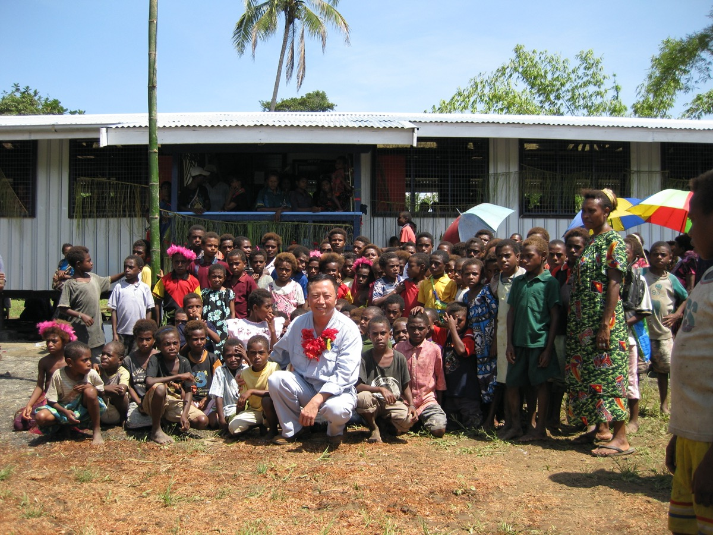
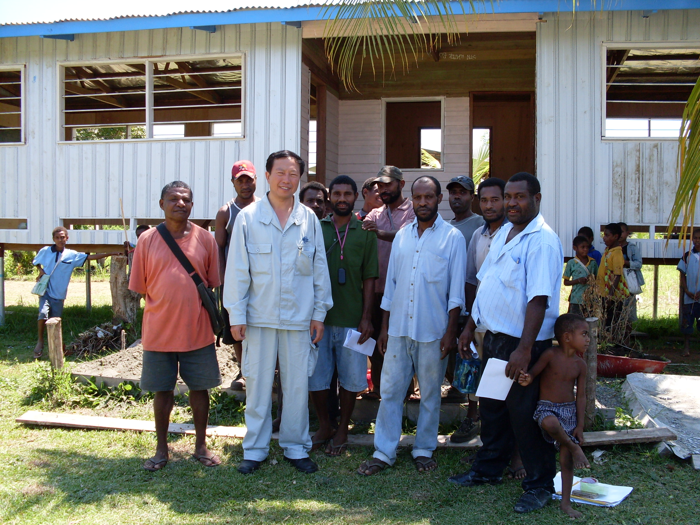
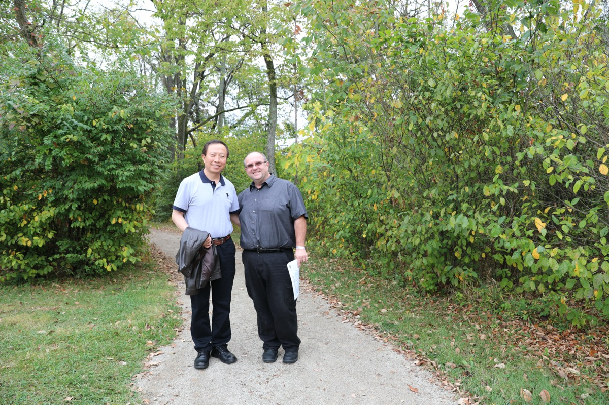
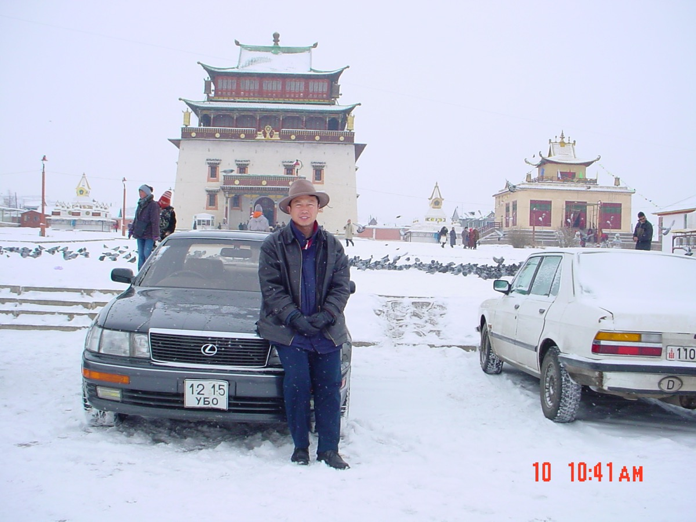
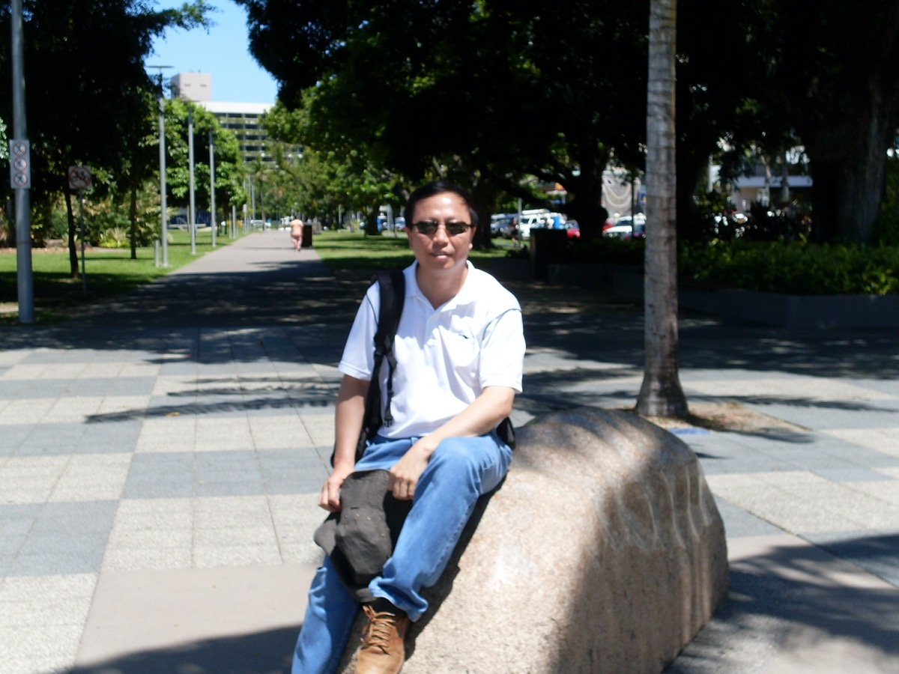
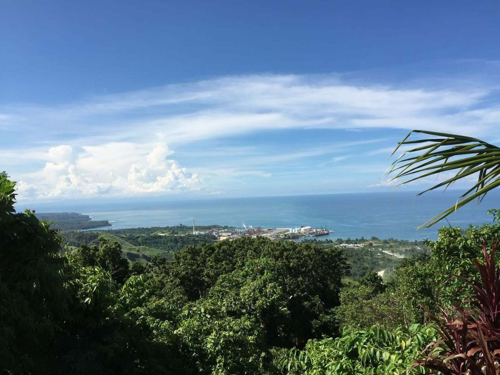

Hi there, I'm
Senior full-stack web developer with nearly 30 years of cross-border project management experience. I build high-performance, internationally focused websites that help businesses grow globally.

I'm George Wang, a senior full-stack web developer with nearly 30 years of cross-border project management experience across Asia-Pacific, Oceania, and the Americas. I specialise in building high-performance, internationally focused websites for businesses going global.
Fluent in business English, I bridge the gap between technical excellence and international communication — delivering clean code, pixel-perfect responsive design, and ultra-fast loading that meets the world's highest professional standards. From corporate brand websites to standalone e-commerce stores, every project I take on is built to perform and built to last.

Nearly 30 years of cross-border work has taken me across three continents — building projects, engaging communities, and exploring the world.
On-site cross-border project management across Asia-Pacific and the Americas
Project Site — Basamuk, Papua New Guinea

International Business Trip — Chicago, USA
Millennium Park — Chicago, USA
Building schools, working with local communities and international partners in PNG

School Completion Ceremony — Papua New Guinea

Community Leaders Meeting — Bangu, PNG

International Collaboration — North America
Travelling and working across Mongolia, Australia, Pacific Islands and beyond

Gandan Monastery — Ulaanbaatar, Mongolia

Cairns — Queensland, Australia

Coastal Project Site — Papua New Guinea
Building high-performance corporate, e-commerce, and local business websites for international clients. Specialising in cross-border projects with a focus on global SEO, multi-language design, and conversion optimisation.
Led large-scale construction and infrastructure projects across remote regions of Papua New Guinea. Managed multicultural teams, liaised with local communities and government authorities, and delivered projects to international standards.
Managed international business development and project coordination across Mongolia and the Asia-Pacific region. Built strong relationships with local partners and international stakeholders across multiple industries.
Began career in international trade and cross-border business management. Developed deep expertise in export operations, international communication, and multi-cultural project coordination that spans nearly 30 years.
Looking for a reliable, experienced web developer who understands international business? Let's talk about your project — I respond to every enquiry personally.